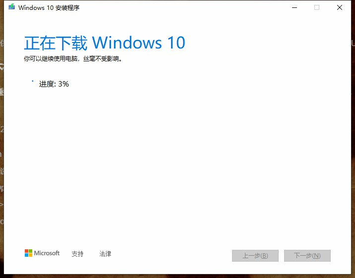
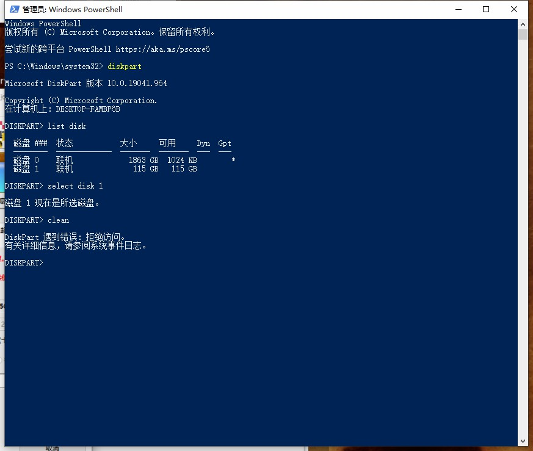
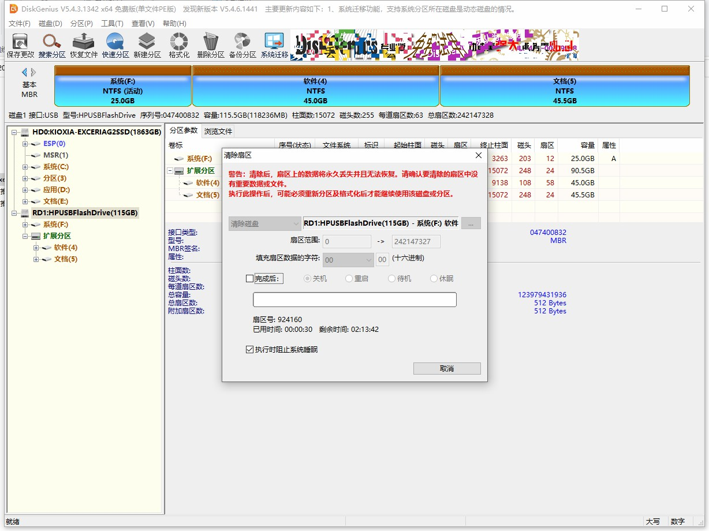

给DELL G3 3579装一个双系统
之前装机拆下来一块金百达KP230 512G NVME M.2接口 NVMe协议，想装到上大学前买的G3上当作系统盘。
正文
名词解释和基本概念
https://zhuanlan.zhihu.com/p/91643438
可行性调研
| 是否可行 | 依据 | |
|---|---|---|
| G3是否支持NVME硬盘 | ✔ | B站有人换过，不过要改BIOS |
| G3是否支持ubuntu | ✔❓ | Ubuntu Certification查不到，不过DELL的Linux支持一向都很好 |
| 重装DELL出厂系统 | ✔ | |
| 在已有windows系统基础上安装ubuntu系统 | ✔ | 戴尔计算机双启动安装 Ubuntu。 |
| 同时有SSD和机械硬盘安装系统时是否会出问题 | 💭 | 直接把机械盘拆掉。 |
iso镜像校验
可以使用Windows下使用自带certutil工具校验文件MD5、SHA1、SHA256。
准备SSD和安装介质
SSD清空
这块固态是要完全清空的，原有的操作系统以及数据担心会引起不必要的麻烦。分区删不掉的EFI分区和备份分区，可以通过diskgenius直接删除并保存。使用Diskpart直接删删不掉，我也懒得找用Diskpart删的方法了。
MediaCreationTool？DELL OS Recovery Tool？
使用Dell OS Recovery Tool制作Windows恢复U盘。
两个都是安装Windows的安装介质制作工具工具，我比较倾向于使用厂商提供的，这样应该可以直接安装激活自带的版本，同时也会自带DELL的支持软件。输入产品的服务编号，使用DELL OS Recovery Tool一路无脑制作，还会良心的给U盘剩余空间自动分区出来。
安装
因为DELL提供的安装系统不提供镜像文件（应该也下载到本地了，我比较懒没找），所以采用先安装windows 10，在这基础上安装Ubuntu 22.04.1的方法。
引导分区(boot分区)和系统不在同一块硬盘上
参考 把机械硬盘拆下来，就只剩下固态硬盘，为什么就启动不了？ - fy939的回答 - 知乎，这个是非常的坑的，而且不知道如何避免，所以打算将两个系统安装完毕后再将机械键盘装上。
重启机器，在DELL LOGO处 F2 进入BIOS 设置中.
- 找到 System Configuration -> SATA Operation 将 RAID On 更改为 AHCI 按 APPLY 后会弹出提示框 全选 YES 。（因为我换了个NVME M2的盘）
- General->Boot Sequence设为 UEFI。（现在基本都是UEFI了）
- General->Advance Boot Operations取消选中Enable Legacy option ROMS。（感觉不禁用也没啥问题）
- Security -> PPT Security -> PTT On取消选中
- Secure Boot -> Secure Boot Enable取消选中（linux是开源的无数字签名，开了可能不让安）
安装Windows 10
应该没啥好说的，SSD安装上，插上U盘直接启动，就会自动安装好。
处理U盘分区数据损坏问题
理论上是这样，但是出现了这个问题，于是转而使用微软官方的工具……下载是真的慢……

还因为U盘格式化坏了没下成，又要解决U盘无法成功读取的问题

无法使用diskpart clean，使用diskgenius进行清楚扇区，再使用windows自带的格式化，之后便可以成功读取到U盘。

在EFI系统上，Windows只能安装到GPT磁盘
换了个32G的U盘来作为安装介质，就是纳闷为啥有两个盘符。
好了这次正常F12从U盘启动安装程序，安装win10，但是提示“在EFI系统上，Windows只能安装到GPT磁盘”。因为U盘启动时，系统默认使用EFI引导启动，而不是常见的MBR引导。但是微软官方制作的启动盘，哪给你整这些花里胡哨的选择。
- 猜想方法一：使用rufus选择UEFI分区类型重新制作。
- 猜想方法二：进入BIOS-选择BOOT界面-将BOOT模式由UEFI引导改为Legacy，参考戴尔电脑新BIOS关闭UEFI，开启legacy。
之后就是分区->自动安装的步骤了。
BIOS中的Windows boot manager丢失
不知道哪根筋抽风了，安装程序无限重启，进BOOT一看没有Windows boot manager。可能是Legacy模式下安装的win10就是没有引导的？那么就重新制作一个GPT分区的安装介质。

参考这个误删了 windows boot manager 的解决办法，使用命令提示符配置启动文件，该命令细节参考BCDBoot 命令行选项。
把SSD拆下来再装上（玄学），就能进入系统了，猜测可能之前未检测到硬盘。
之后登陆账户，因为我的笔记本是OEM安装，联网自动激活。
安装Ubuntu 22.04.1
将原来的U盘清空，使用rufus-3.21制作驱动。
参考单硬盘安装 UEFI 启动 Win10 和 Ubuntu 双系统。
检查一下Secure Boot Enable是否关闭，按F12，没看到USB启动项，可能是bug，把Enable Legacy option ROMS开启看一下（但仍然选择下面的UEFI引导），如果还不行就rufus换DD模式。
参考为什么在安装ubuntu和win双系统时没人推荐安装时选择ubuntu与windows共存那个选项？，所以我们还是选择“其他选项”来自己创建调整分区。
并参考如何在戴尔PC上安装具有多个自定义分区的Ubuntu，具体的分区细节和大小可以按照自己硬盘容量搜索，然后将下面的安装启动引导其的设备选择为刚才分出来的efi分区的设备号。可以参考Ubuntu20.04操作系统安装及重中之重：系统分区。
之后设置好用户名和密码，等待安装完成即可。
使用
windows可以不讲。
安装完毕后点击现在重启，发现又进入了安装界面。将U盘拔下来，并关闭系统。重新启动，发现进入GNU GRUB，类似下图这样：

需要手动来选择，如果ubuntu不常用，可以进入BIOS，将Windows Boot manager